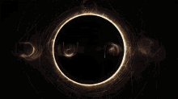
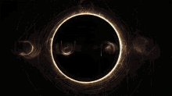
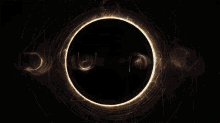

Em um cenário global permeado por preocupações sobre a exploração de recursos e o abismo da competição desenfreada, "Duna" emerge como uma narrativa que reverbera com um eco inquietante. A obra-prima de ficção científica escrita por Frank Herbert transcende sua ficção para iluminar aspectos sombrios da busca pela supremacia e suas consequências devastadoras.
A trama se desenrola em um futuro distante, onde o planeta desértico Arrakis é o epicentro de uma disputa sangrenta pela "melange", uma especiaria altamente valiosa. A história segue o jovem Paul Atreides, cuja família é lançada em uma intrincada rede de intrigas e poder. À medida que Paul enfrenta um ambiente hostil, ele é forçado a enfrentar questões sobre a ganância, a opressão e os limites da humanidade.
"Duna" pinta um retrato sombrio de um futuro onde o apetite voraz por recursos naturais desencadeia uma luta desesperada por controle. Arrakis, uma vez um planeta vibrante, torna-se um lembrete alarmante das consequências ambientais quando a busca por lucro supera a consideração pelo equilíbrio ecológico.

O subtexto profundo da obra ressoa com os dilemas contemporâneos, ecoando os temores em relação à exploração irresponsável e à competição global por recursos finitos. "Duna" serve como um sinal de alerta contundente sobre os perigos da busca implacável por poder, questionando a ética e a sustentabilidade em um mundo onde os interesses conflitantes podem levar a desastres iminentes.
O épico literário transcende sua forma e se transforma em um lembrete incisivo de que as ações impulsivas e egoístas podem ter consequências catastróficas. Em uma era de disputas por recursos e crescente desigualdade, "Duna" ressoa como um chamado urgente para repensar nossos caminhos, considerar os efeitos colaterais de nossas ambições e recordar os riscos da busca desenfreada por poder em um mundo que está cada vez mais à beira do precipício
“NÃO TEREI MEDO. O MEDO MATA A MENTE."